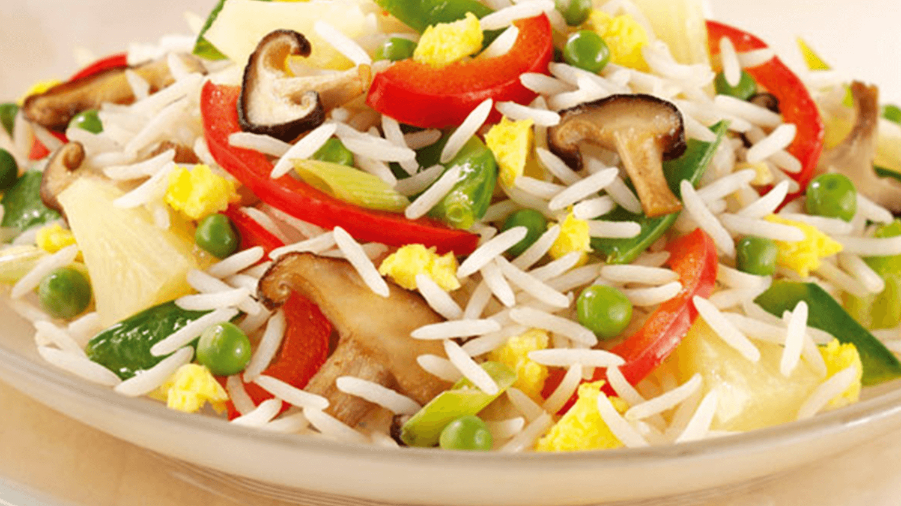

Fried Rice

Fried rice is a savory dish made by stir-frying cooked rice with vegetables, protein (like chicken, shrimp, or tofu), and flavorful seasonings such as soy sauce and garlic. Often prepared with day-old rice, it’s quick, versatile, and easily customizable to suit any taste. The result is a satisfying, flavorful dish that can be enjoyed on its own or as a side to other meals.
Ingredients:
- 2 cups cooked rice (preferably day-old for better texture)
- 2 tablespoons vegetable oil (or any cooking oil)
- 1 small onion, chopped
- 2 garlic cloves, minced
- 1 medium carrot, diced
- 1/2 cup frozen peas (or any veggies of your choice)
- 2 eggs, lightly beaten (optional, for extra richness)
- 1 cup cooked protein (such as chicken, shrimp, tofu, or pork, chopped)
- 3 tablespoons soy sauce (adjust to taste)
- 1 tablespoon sesame oil (optional, for added flavor)
- Salt and pepper (to taste)
- 2 green onions, chopped (for garnish)
Steps to Cook:
- Prepare the rice: Use day-old rice for the best texture. If using fresh rice, let it cool down to reduce moisture.
- Cook the eggs (optional): In a large skillet or wok, heat 1 tablespoon of oil over medium heat.
Pour in the beaten eggs, scramble them, and cook until fully set. Remove from the pan and set aside.
- Sauté the vegetables: Add another tablespoon of oil to the same pan. Add chopped onions and garlic, and sauté for 1-2 minutes until fragrant.
Add the diced carrots and peas (or other vegetables), and cook for another 3-4 minutes until tender.
- Add the protein: Add your cooked protein (chicken, shrimp, tofu, etc.) and stir-fry for a couple of minutes to heat through.
- Stir-fry the rice: Add the day-old rice to the pan and break up any clumps. Stir-fry for 4-5 minutes until the rice is heated through and slightly crispy.
- Season the rice: Add the soy sauce, sesame oil, and season with salt and pepper to taste. Stir well to evenly coat the rice with the sauces.
- Add eggs and garnish: Return the cooked eggs to the pan, breaking them into pieces. Stir everything together.
Garnish with chopped green onions and serve immediately.